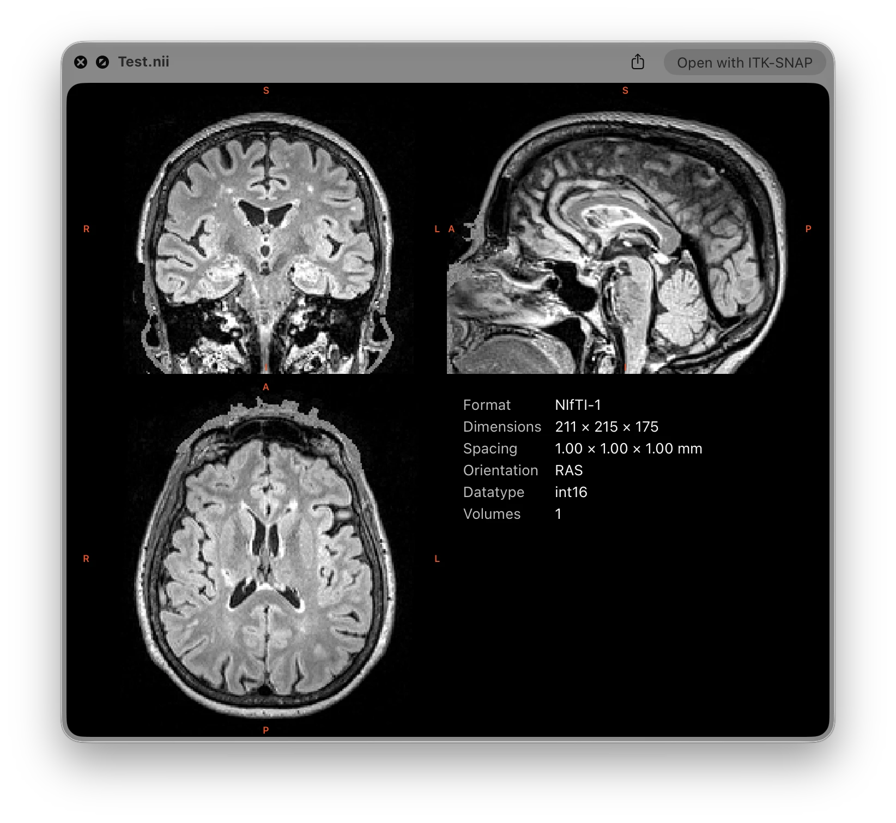
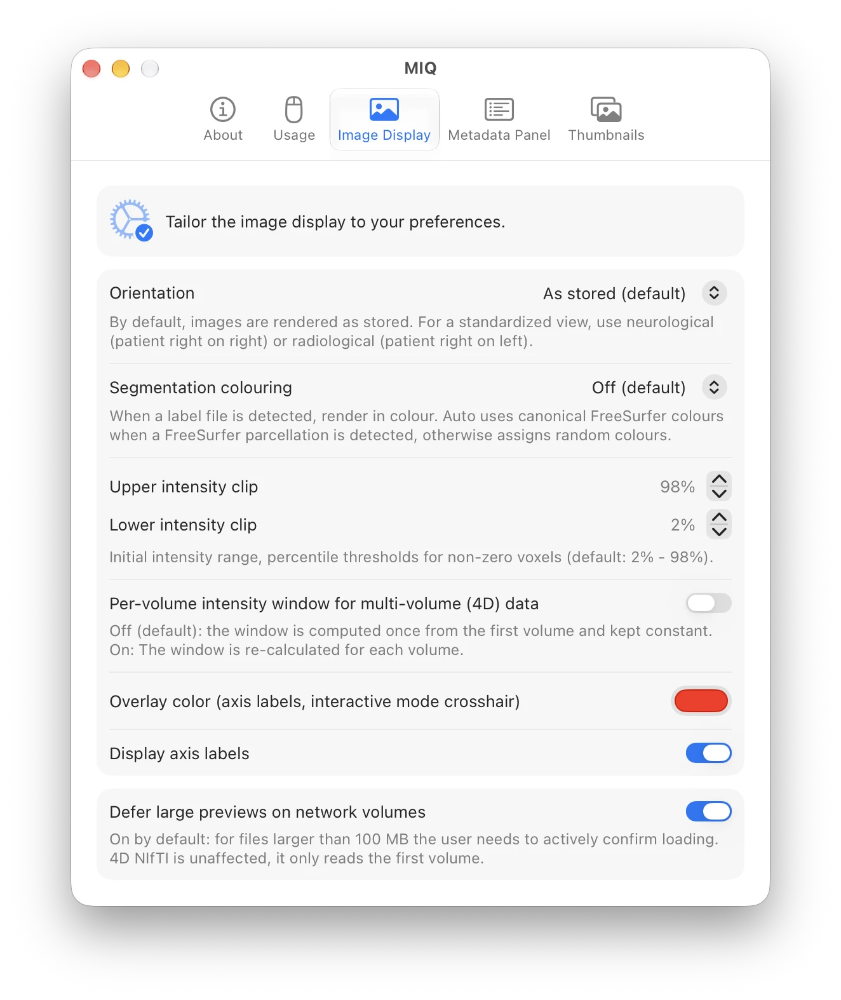
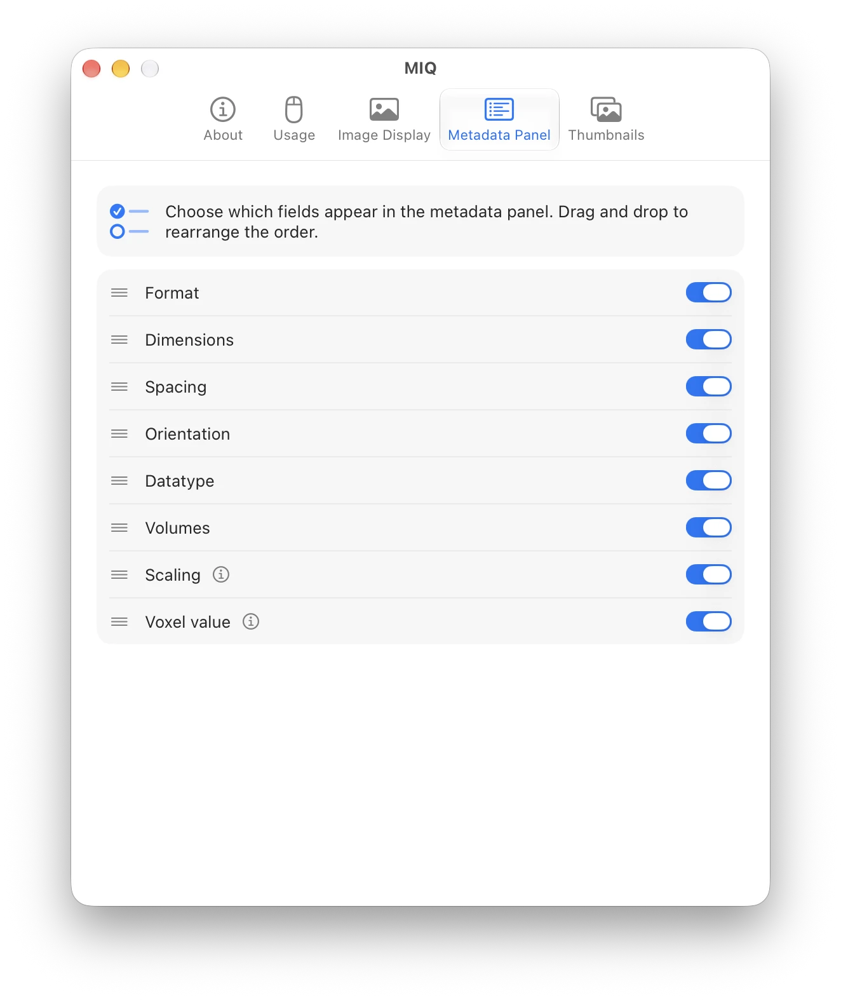
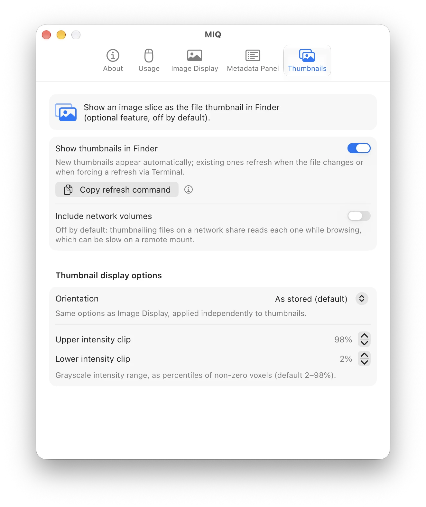

MIQ is a lightweight macOS Quick Look extension for medical volume images. Press Space on a supported file to instantly get an interactive orthogonal slice view and a metadata panel. No app to open, no waiting.
Universal binary · Apple Silicon & Intel · macOS 14 Sonoma, 15 Sequoia, 26 Tahoe

A convenience tool for quickly inspecting medical image files from the Finder. It prioritizes speed and ease of use over advanced visualization.
Scrub through slices and volumes, move the crosshair, and adjust window/level, all inside the preview window.
Local uncompressed files are memory-mapped and load instantly. Compressed NIfTI is partially decompressed for a quick first frame. On network volumes, NIfTI previews read only the first volume, staying fast over slow connections.
Tune orientation, intensity scaling, label colors, and the metadata panel content and order in the companion app.
Shows data as stored on disk by default, so you see the raw orientation. Switch to neurological or radiological view if you prefer.
Optionally show an image slice as the file icon, so you can recognize volumes at a glance while browsing.
Optionally colors integer label maps (segmentations), including the canonical FreeSurfer LUT for aseg/aparc segmentations. Off by default, activate via Settings.
All file formats are supported uncompressed and gzip-compressed.
.nii .nii.gz.mgh .mgz .mgh.gz.mif .mif.gz.nrrdMIQ only supports volume files in research formats, DICOM is currently not supported.
MIQ relies on the file extension to determine the format, so it’s important that files have the correct extension.
# tap, trust the cask, and install
brew tap marcoduering/miq
brew trust --cask marcoduering/miq/miq
brew install --cask miq
/Applications) at least once to register the Quick Look extension.MIQ checks for updates. Open the app occasionally to see update alerts.
Adjust render orientation, intensity scaling, label colors, and the metadata panel from the companion app.



Press Space, scrub through slices and volumes, and inspect the metadata, all without leaving Finder.
Video not loading? Watch it on GitHub.